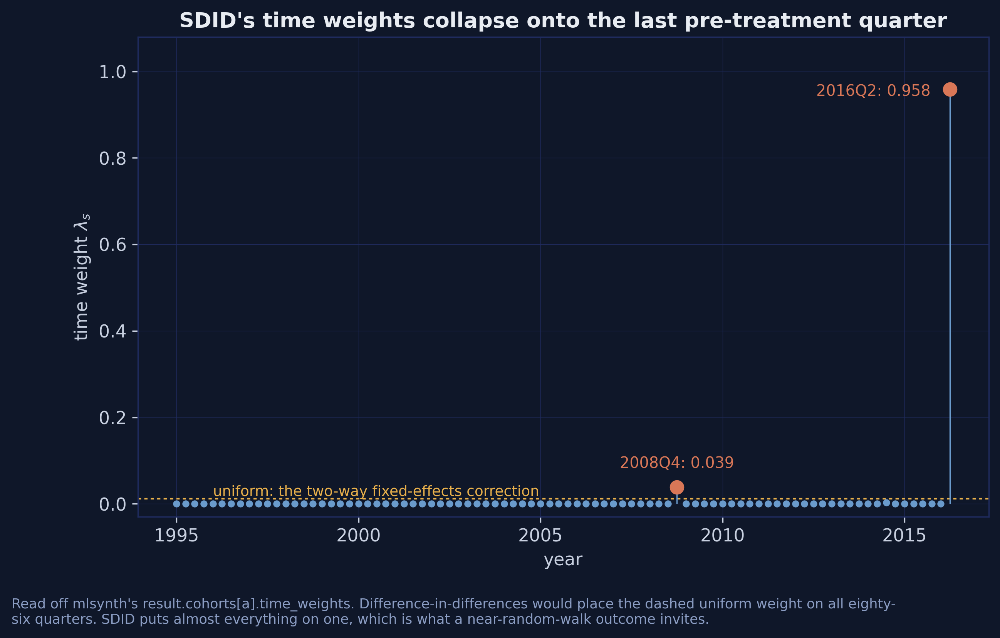
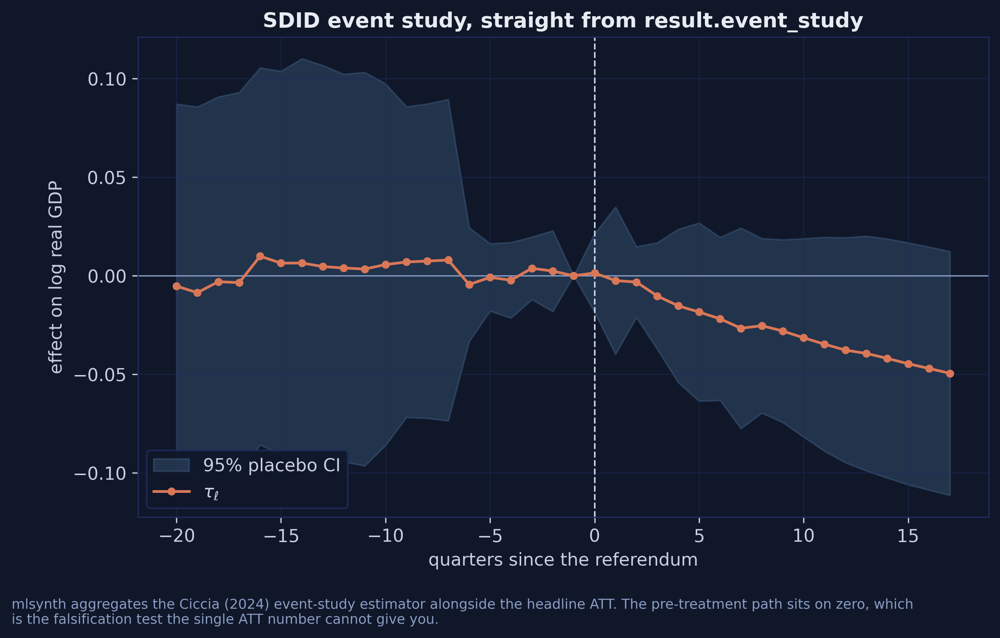
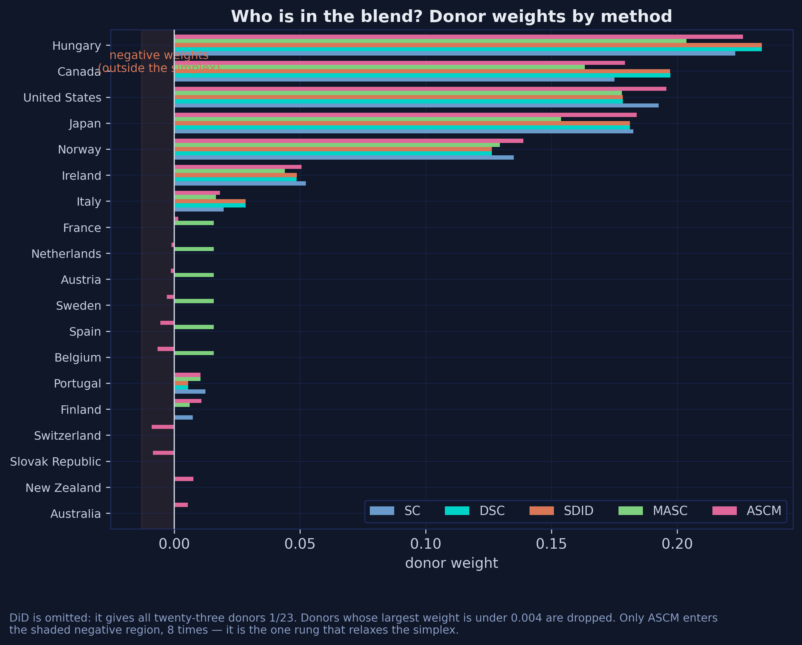
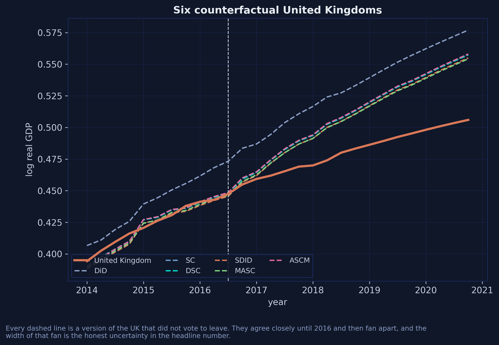
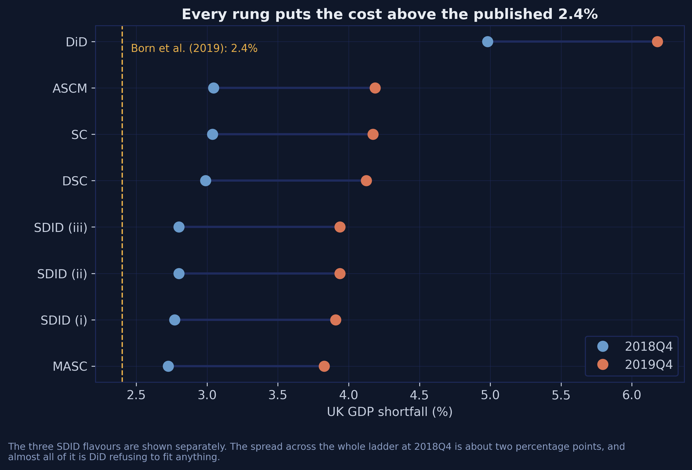
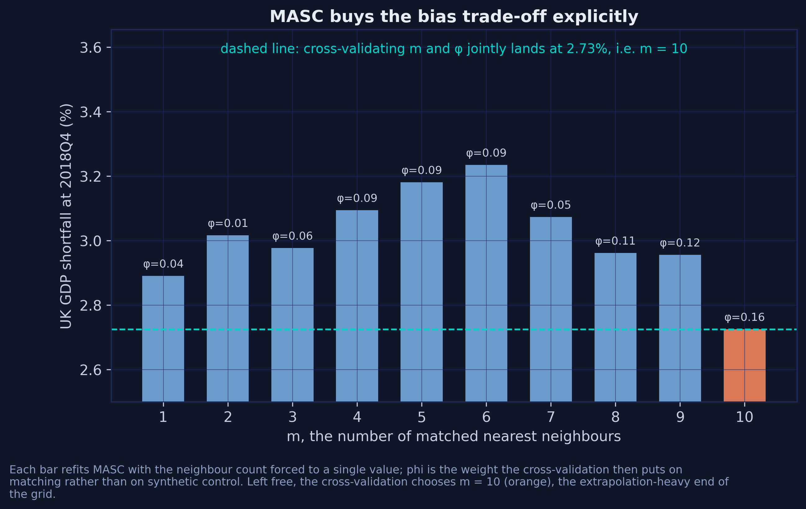
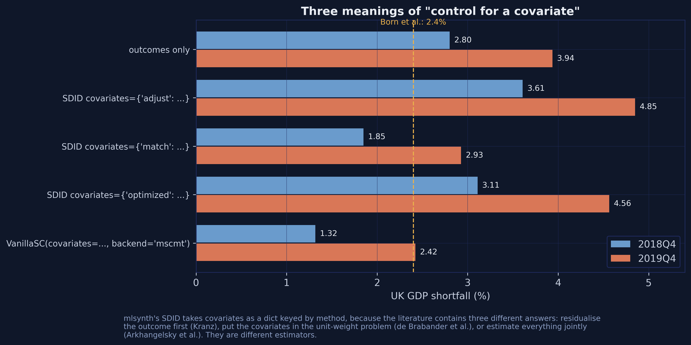
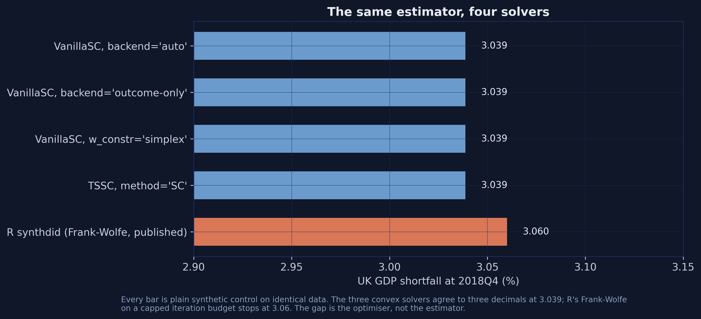
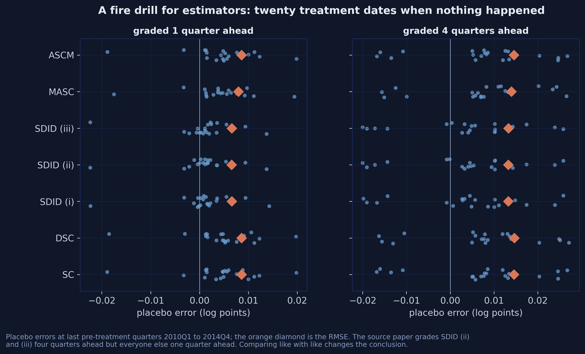
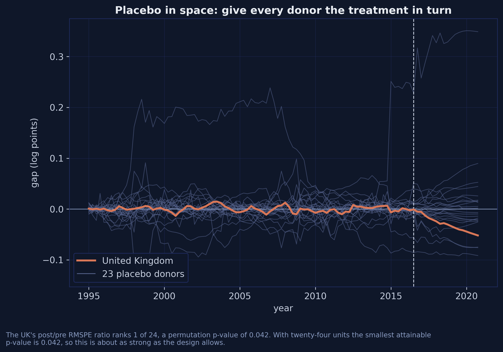

The gap at the evaluation quarter, minus the \(\lambda\)-weighted average gap before it.
And the time weights collapse onto one quarter

Stem plot of SDID’s 86 time weights. Almost all the mass sits on 2016Q2; the dashed line is the uniform weight DiD would use.
0.958 on 2016Q2 against DiD’s uniform \(1/86 \approx 0.012\).
Flat before, negative after

SDID event study by quarters since the referendum, with a 95% placebo confidence band.
Pre-treatment effects average \(+0.0021\), post-treatment \(-0.0281\) — a falsification test the single ATT number cannot give you, for the cost of one extra line.
Stages 4 and 5 — buy the trade-off, or drop the constraint
Ridge-correct what the simplex cannot close. Negative weights allowed.
VanillaSC(cfg, augment="ridge")
Eight negative weights, largest \(-0.009\).
3.04% — same as plain SC.
The UK sits comfortably inside the hull, so there is almost nothing to correct.
Five estimators, essentially the same five countries

Donor weights under SC, DSC, SDID, MASC and augmented SC across the donor pool; the shaded region marks negative weights.
Hungary, the United States, Japan, Canada and Norway carry 87-91% of the counterfactual under every method. Only ASCM ever goes negative.
The paths agree until the referendum, then fan apart

Six counterfactual paths for the United Kingdom alongside the observed series, 2014-2020.
Difference-in-differences is the clear outlier. The other five are hard to tell apart by eye — which is the point.
The whole ladder, side by side
Stage
mlsynth call
end-2018
end-2019
published
DiD
FDID(...).fit().did
4.98
6.18
—
SC
VanillaSC(...)
3.04
4.17
3.06
DSC
TSSC(..., method="MSCa")
2.99
4.12
2.98
SDID
SDID(..., zeta=0.0)
2.80
3.94
2.79
MASC
MASC(..., set_f=range(6, 87))
2.73
3.83
2.73
ASCM
VanillaSC(..., augment="ridge")
3.04
4.19
3.04
The width of the cluster — 2.73-3.04% — not any point inside it, is the honest answer.
Every stage exceeds the published 2.4%

Every stage’s estimated UK GDP shortfall at 2018Q4 and 2019Q4, with the three SDID flavours shown separately; the dashed line is the published 2.4%.
2.73-3.04% at end-2018 and 3.83-4.19% a year later — every stage above the 2.4% previously published for this same dataset.
The Defaults
Act III
Three defaults each move the answer more than the ladder does
Setting
At its default
Set deliberately
Moves the estimate by
zeta — SDID’s unit-weight penalty
2.67
2.80
0.13 pp
set_f — MASC’s cross-validation folds
3.19
2.73
0.47 pp
the covariate method
3.61
1.85
1.76 pp
the whole ladder, DiD excluded
2.73
3.04
0.31 pp
You can pick the wrong default and land further from the truth than if you had picked the wrong estimator.
zeta penalises the unit weights unless you pass a literal zero
SDID(cfg(96)).fit() # zeta at its default -> 2.67%SDID(cfg(96, zeta=0.0)).fit() # what the paper solves -> 2.80%
Every language penalises by default: R needs zeta.omega = 0, Stata needs zeta_omega(0).
0.13 pp — larger than the whole spread between SC, DSC and ASCM.
set_f decides which folds MASC learns from

The 2018Q4 estimate for each forced neighbour count from 1 to 10, each bar labelled with its phi; the dashed line marks the freely cross-validated 2.73%.
set_f=range(6, 87) gives 2.73%; the default min_preperiods resolves to 43 and gives 3.19%. One argument, 0.47 pp.
“Control for a covariate” means three different things
Key
Method
What it does
"adjust"
Kranz (2022)
residualise the outcome, then run SDID
"match"
de Brabander et al.
covariates inside the unit-weight problem
"optimized"
Arkhangelsky et al.
weights and coefficients jointly
covariates is a dict keyed by method. Pass a bare list and it raises.
Three defensible readings in the literature — so three different estimators.
And they disagree by 1.76 percentage points

SDID with no covariates and under the adjust, match and optimized methods, plus VanillaSC’s bilevel route; the dashed line is the published 2.4%.
3.61 / 1.85 / 3.11 against 2.80 with no covariates at all.
One estimator silently rounds the number you are most likely to quote
TSSC rounds every scalar. The series stay full precision.
When the scalar and the series disagree — trust the series.
A name is a mnemonic, not a definition
Class
Is actually
Not to be confused with
DSC
Distributional SC (Gunsilius)
demeaned SC = TSSC(method="MSCa")
DSCAR
Dynamic SC for Auto-Regressive processes
either of the above
SCD
SC with Differencing
DSC
DRSC
Distribution-Regression SC
DSC
MEDSC
Mediation SC
demeaned SC
mlsynth.DSC is not this deck’s DSC — and importing it raises no error.
A synthetic control estimate carries its solver’s fingerprint

Four mlsynth solver routes, all at 3.039%, against R’s Frank-Wolfe implementation at 3.060%.
Three languages, two camps — split by optimiser, not by author. Replicate a published number and land 0.02 away? Suspect the optimiser before the data.
Which Stage?
Act IV
Score the stages on a task whose true answer is zero
Move the treatment date to a quarter when nothing happened.
The true effect is zero, so every estimate is pure error.
def placebo_one(k, h):"""Fit every stage on 1..k, predict k + h. Truth is zero.""" ...errors = [placebo_one(k, h) for k in FAKE_DATES for h in (1, 4)] # 20 dates
inference=False and an explicit m_grid are what keep this to 13 seconds.
The time weights earn their keep

Twenty placebo errors for each of the seven estimators, graded one quarter ahead and four quarters ahead; the orange diamond marks the RMSE.
At \(h = 1\): SDID 0.0066 against 0.0086 for SC, DSC and ASCM — a 23% cut.
But the published ranking was graded on a different exam
Method
RMSE, \(h = 1\)
RMSE, \(h = 4\)
Published
SC
0.0086
0.0145
0.0089
DSC
0.0086
0.0146
0.0087
SDID (i)
0.0066
0.0132
0.0067
SDID (ii)
0.0066
0.0133
0.0134
SDID (iii)
0.0066
0.0133
0.0134
MASC
0.0080
0.0140
0.0080
ASCM
0.0086
0.0146
0.0086
Two rows were graded four quarters ahead. Matched, the three SDID flavours are indistinguishable.
The UK’s gap is deeper than any placebo’s

Twenty-three grey placebo gap paths, one per donor given the treatment in turn, with the United Kingdom in orange.
RMSPE ratio 5.85, rank 1 of 24, giving a permutation p-value of \(1/24 = 0.042\).
The strongest objection — and the answer
Objection.\(p = 0.042\) is the smallest attainable with 24 units — the test is at its floor. And SDID’s own interval contains zero.
Response. Five inference routes span \(p = 0.006\) to \(0.042\) and all reject at 5%. But the floor is real, and no estimator changes it.
Which is why the deliverable is the cluster, not the point.
What the referendum cost
2.7 – 3.0%
UK GDP shortfall at end-2018, at every stage of the ladder · 3.8 – 4.2% a year later · against 2.4% previously published
What to take away
Fit the ladder, not a stage. Publish the cloud — six estimators, one config, thirteen seconds.
Say which defaults you set. Here that matters more than the estimator’s name.
Pin the commit, not the release. A version number is not a version.
A second-decimal disagreement is the optimiser, not the data.